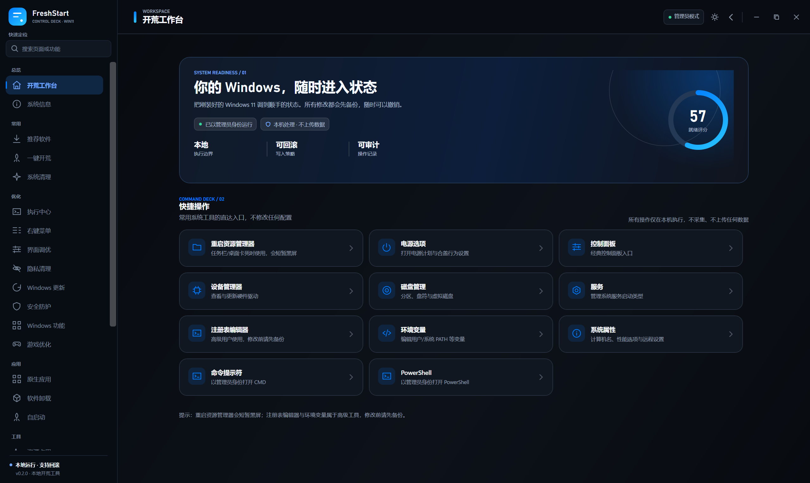
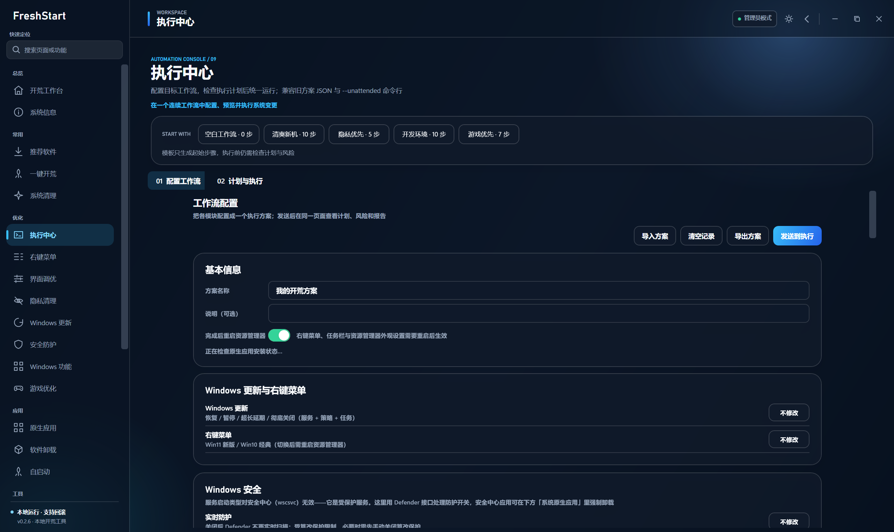
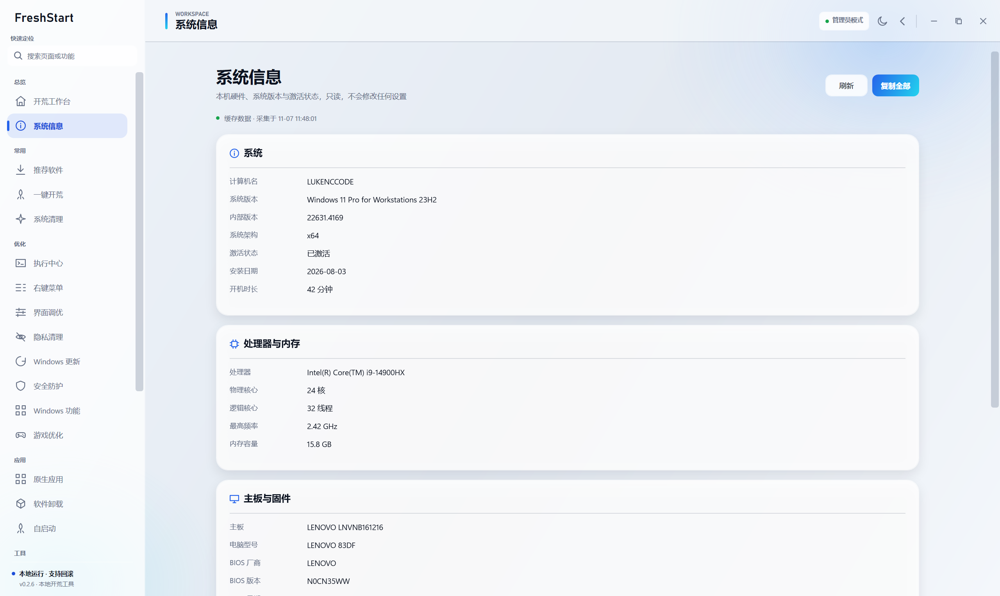
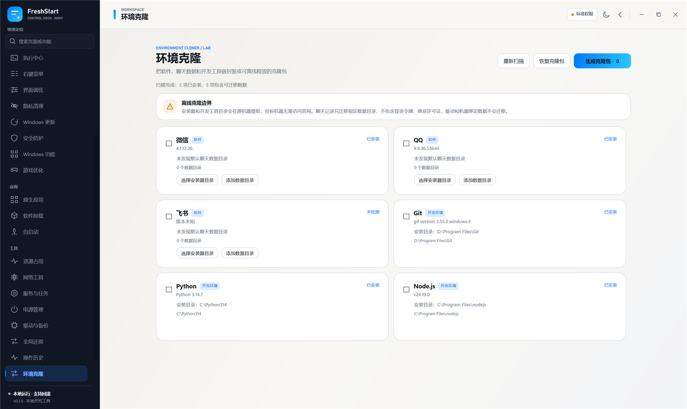

INSTALLER / ONLINE
推荐
轻量安装器
适合已有网络和可用 winget 的系统。文件更小，安装期间可能需要联网获取 App Installer 或软件包。
53.35 MB · EXE
直接下载 ↓
FreshStart 把优化、软件、隐私、环境迁移和可回滚执行收进一个本地工作台。不登录，不上传，也不把系统变成黑盒。
不是重装系统，而是重新掌握你的 Windows。每一项改变都先说明、先记录，再给你一条明确的退路。
从系统基线到软件安装，再到执行与设置，每个界面都为同一套可回滚工作流服务。

把系统状态、常用操作和下一步推荐集中在一个清晰界面里。所有功能都从同一个本地工作台出发。
功能不是散落的快捷方式，而是一套有边界、有记录、有恢复路径的本地执行系统。

组合系统动作、调整依赖顺序、预检风险，再统一运行并生成可以回看的报告。

一页看清处理器、内存、显卡、磁盘、网络和激活状态，为后续调整建立可靠基线。

把软件、聊天数据与开发工具链封装为离线克隆包，让下一台电脑更快回到熟悉状态。
FreshStart 不要求你相信一个不可见的“一键优化”。先读取当前状态，再备份、写入、校验；失败时按逆序自动回滚。
DEFAULT POLICY / LOCAL + REVIEWABLE记录现有值，而不是直接覆盖未知配置。
备份注册表、目录、服务与任务状态。
执行后读回结果，确认改变真实生效。
失败时回滚，并把每一步保留在操作历史中。
在本机提取应用、聊天数据、下载文件、开发工具与系统 PATH，在新电脑离线释放。不重新去官网下载，也不带走登录令牌和机器绑定许可证。
从一台刚装好的 Windows 开始。选择轻量安装器，或在无法联网安装 winget 的环境使用完整离线版。
不会。没有账户、遥测或云端控制台，配置、日志、备份和报告都保存在本机。
明确支持回滚的写操作会先生成快照。卸载、原生应用移除和部分清理操作本身不可撤销，界面会在执行前说明。
不会主动迁移登录令牌、Cookie、密码或机器绑定许可证。数据可以恢复，登录需要用户自行完成。
核心系统功能在本地运行。软件安装会优先使用 winget，也可按需更新 App Installer 或导入微软官方离线包。
FreshStart 面向 Windows 11 22H2 及以上版本。部分功能可能能在旧系统启动，但不在支持范围内。
服务、系统策略和部分注册表位置需要管理员权限。只读页面无需提权，涉及系统写入时会在界面中明确提示。
是，原创源代码使用 MIT License。软件内置操作、背景组件和第三方资源继续遵循各自的授权说明。
配置、备份和操作记录默认位于用户本地应用数据目录。卸载软件不会自动删除这些恢复材料，可按需手动清理。
可以在 GitHub Issues 中说明 Windows 版本、目标功能和当前状态，不要直接套用不适合的优化方案。